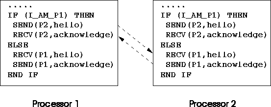

Next: Processor Communications
Up: Introduction to High Performance
Previous: The Concept of HPF
SPMD model relies on:
- arrays of processors,
- distributed data,
- some global data,
- message passing between processors,
- loose synchronisation,

For more information, click here

Next: Processor Communications
Up: Introduction to High Performance
Previous: The Concept of HPF
Adam Marshall ©University of Liverpool, 1996
Tue Nov 26 19:51:50 GMT 1996